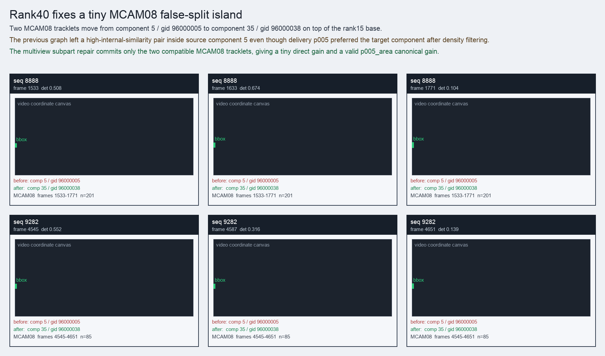

Rank40 fixes a tiny MCAM08 false-split island
Two MCAM08 tracklets move from component 5 / gid 96000005 to component 35 / gid 96000038 on top of the rank15 base.
Before
component 5, gid 96000005, component_size 237
component 5, gid 96000005, component_size 237
After
component 35, gid 96000038, component_size 210, decision_status subpart_reassign
component 35, gid 96000038, component_size 210, decision_status subpart_reassign
Evidence
target_sim=0.3737, target_margin=-0.0959, source_rest_margin=0.6739
target_sim=0.3737, target_margin=-0.0959, source_rest_margin=0.6739
Failure and fix
Old failure: The previous graph left a high-internal-similarity pair inside source component 5 even though delivery p005 preferred the target component after density filtering.
New implementation: The multiview subpart repair commits only the two compatible MCAM08 tracklets, giving a tiny direct gain and a valid p005_area canonical gain.
BBox evidence

Moved tracklets
| seq | video | gid | component | frames | dets |
|---|---|---|---|---|---|
| 8888 | vlincs_MS01_MC0001_MCAM08_2024-03-Tc6 | 96000005 -> 96000038 | 5 -> 35 | 1533-1771 | 201 |
| 9282 | vlincs_MS01_MC0001_MCAM08_2024-03-Tc6 | 96000005 -> 96000038 | 5 -> 35 | 4545-4651 | 85 |